p <- ggplot(data = organdata,
mapping =
aes(x = roads,
y = donors,
color = world))
p + geom_point(size = 2,
alpha = .5) +
theme(legend.position = "top")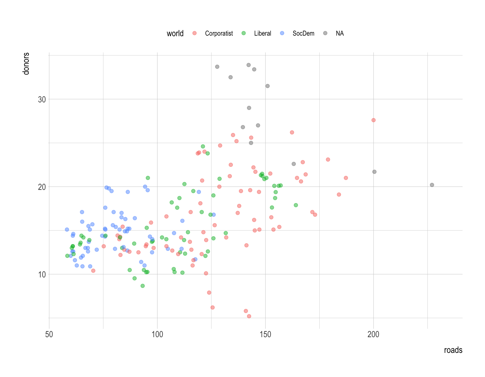
Refine Your Plots
p <- ggplot(data = organdata,
mapping =
aes(x = roads,
y = donors,
color = world))
p + geom_point(size = 2,
alpha = .5) +
theme(legend.position = "top")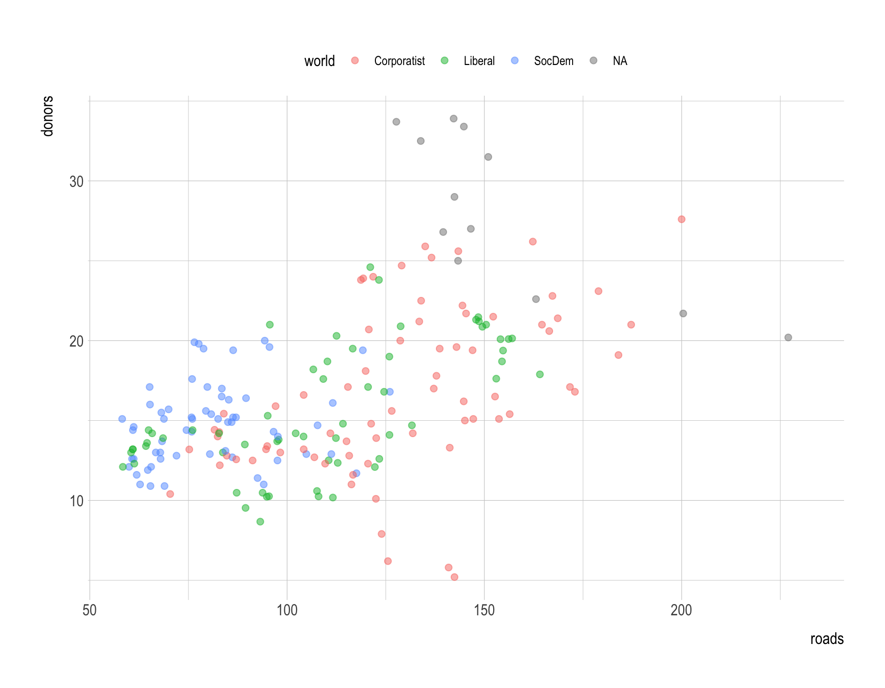
p <- ggplot(data = organdata,
mapping =
aes(x = roads,
y = donors,
color = world))
p + geom_point(size = 2,
alpha = .5) +
scale_color_brewer(
palette = "Set2",
na.value = "grey60") +
theme(legend.position = "top")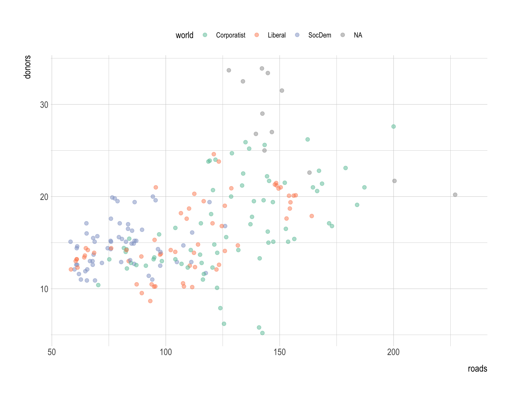
p + geom_point(size = 2,
alpha = .5) +
scale_color_brewer(
palette = "Pastel2",
na.value = "grey60") +
theme(legend.position = "top")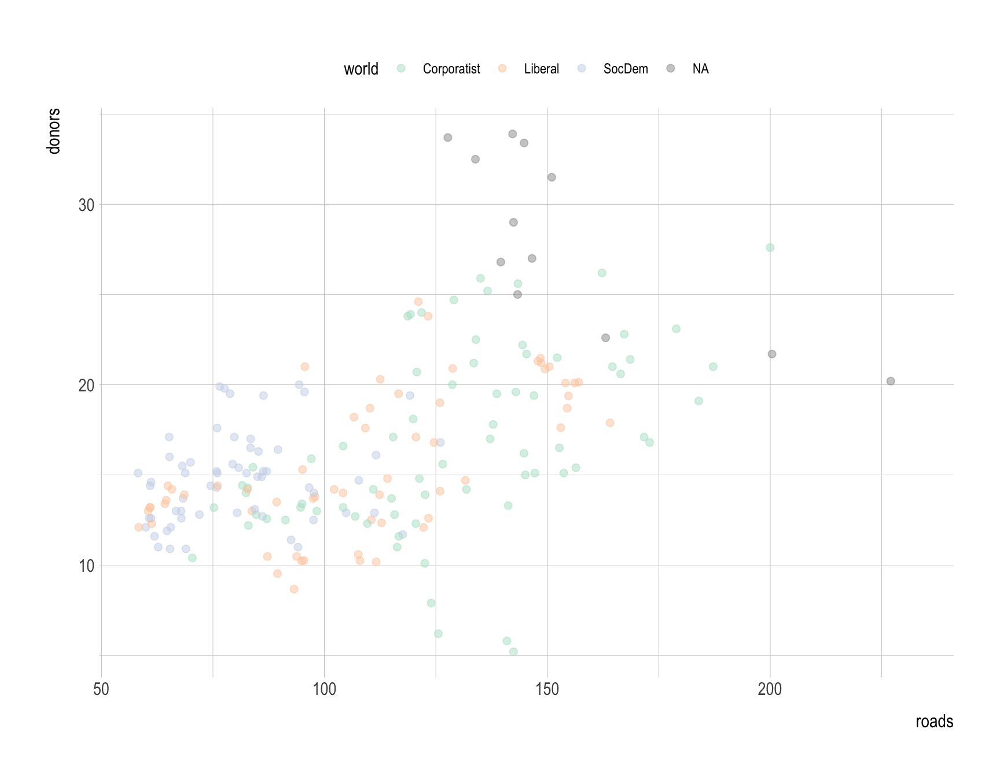
p + geom_point(size = 2,
alpha = .5) +
scale_color_brewer(
palette = "Dark2",
na.value = "grey60") +
theme(legend.position = "top")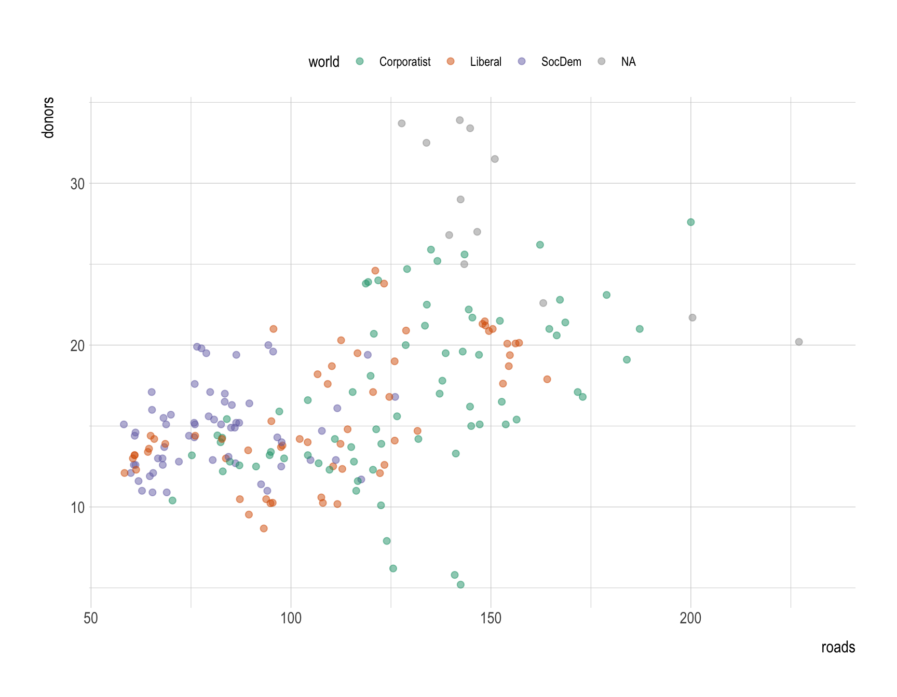
p + geom_point(size = 2) +
scale_color_manual(
values = c("#3c6ff8", "#afd68d",
"#8467ad", "#82857f")) +
theme_ipsum() +
theme(legend.position = "top") 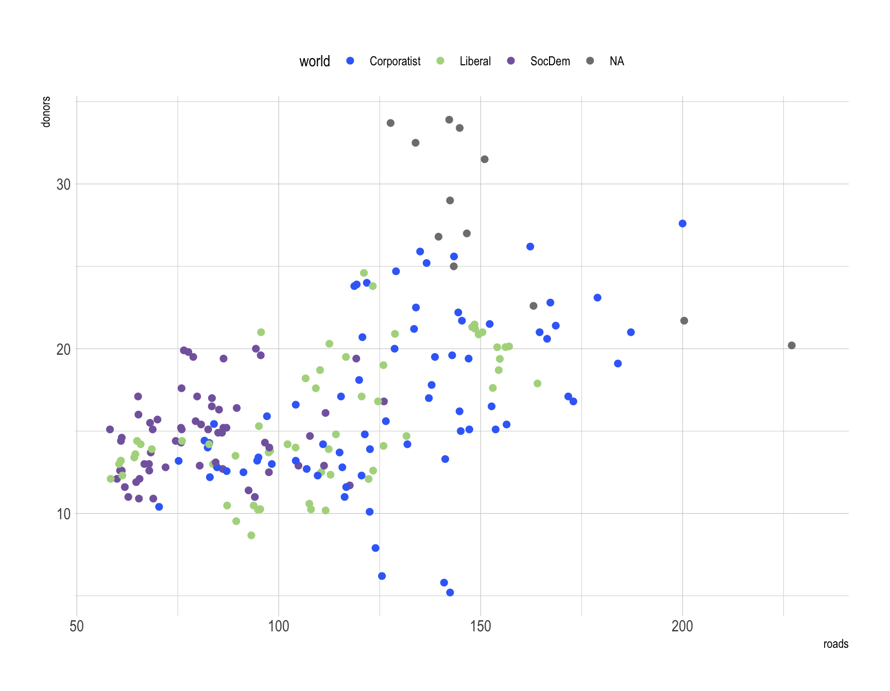
p + geom_point(size = 2) +
scale_color_manual(
values = c("red", "green",
"blue", "darkgrey")) +
theme_ipsum() +
theme(legend.position = "top") 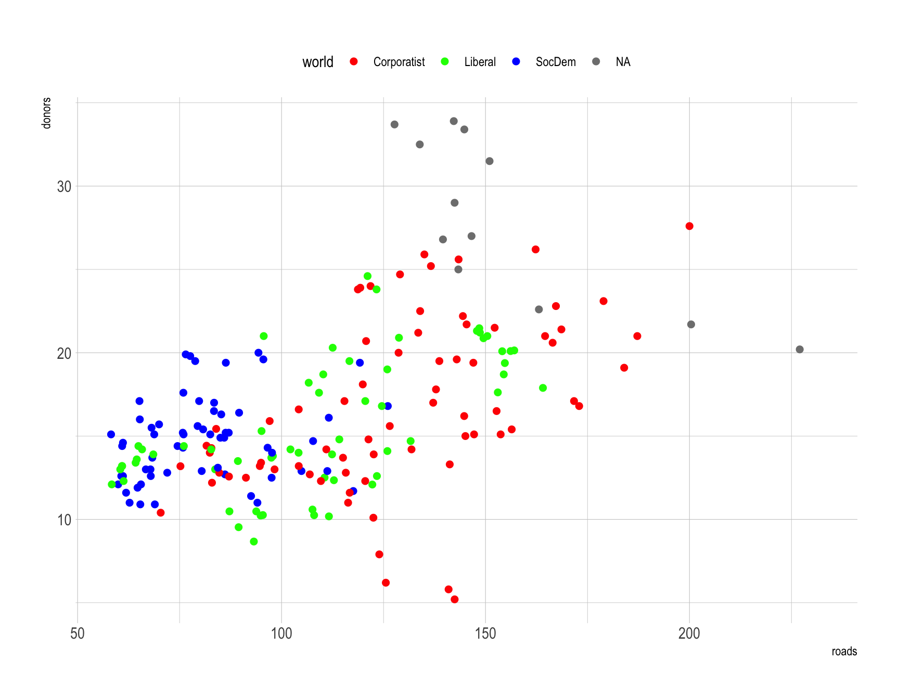
# DEM Blue and REP Red
party_colors <-
c("#2E74C0", "#CB454A")
p0 <- ggplot(
data = filter(county_data,
flipped == "No"),
mapping =
aes(x = pop,
y = black/100) )
p1 <- p0 +
geom_point(alpha = 0.15,
color = "gray50") +
scale_x_log10(labels=scales::comma)
p2 <- p1 +
geom_point(
data = filter(county_data,
flipped == "Yes"),
mapping =
aes(x = pop, y = black/100,
color = partywinner16)) +
scale_color_manual(
values = party_colors)
p3 <- p2 +
scale_y_continuous(
labels=scales::percent) +
labs(
color =
"County flipped to ... ",
x =
"County Population (log scale)",
y =
"Percent Black Population",
title =
"Flipped counties, 2016",
caption =
"Counties in gray did not flip.")
p4 <- p3 +
geom_text_repel(
data =
filter(
county_data,
flipped == "Yes" & black >25),
mapping =
aes(x = pop, y = black/100,
label = state),
size = 2)
p4 + theme_minimal() +
theme(legend.position="top")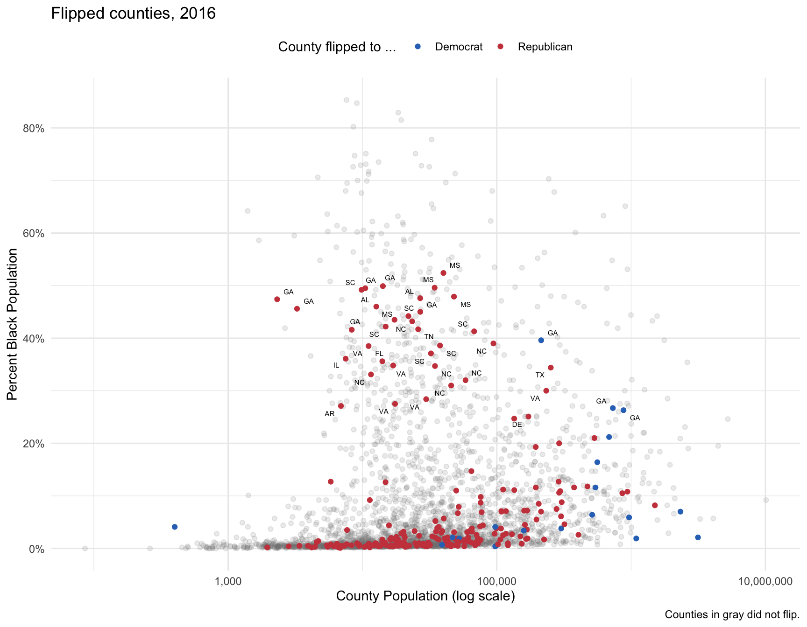
gss_lon <- gss_lon
yrs <- c(seq(1972, 1988, 4),
1993,
seq(1996, 2016, 4))
mean_age <- gss_lon |>
filter( !is.na(age),
year %in% yrs) |>
group_by(year) |>
summarize(
xbar = round(
mean(age, na.rm = TRUE), 0)
)
mean_age$y <- 0.3
yr_labs <- data.frame(
x = 85, y = 0.8,
year = yrs) # to position the age as a text labelp <- ggplot(
data =
filter(gss_lon, year %in% yrs),
mapping =
aes(x = age))
p1 <- p +
geom_density(
fill = "black", color = FALSE,
alpha = 0.9,
mapping = aes(y = ..scaled..))
p1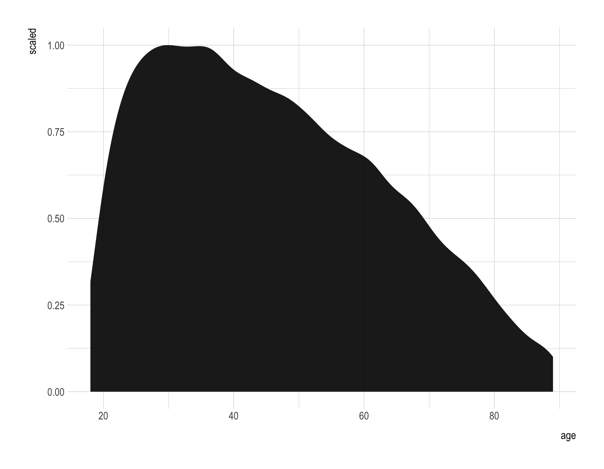
p <- ggplot(
data =
filter(gss_lon, year %in% yrs),
mapping =
aes(x = age))
p1 <- p +
geom_density(
fill = "black", color = FALSE,
alpha = 0.9,
mapping = aes(y = ..scaled..))
p2 <- p1 +
geom_vline(
data = filter(
mean_age, year %in% yrs),
aes(xintercept = xbar),
color = "white", size = 0.5) +
geom_text(
data = filter(mean_age,
year %in% yrs),
aes(x = xbar, y = y, label = xbar),
nudge_x = 7.5, color = "white",
size = 3.5, hjust = 1) +
geom_text(data = filter(
yr_labs, year %in% yrs),
aes(x = x, y = y, label = year))
p3 <- p2 +
facet_grid(year ~ ., switch = "y")
p2a <- p3 +
theme(
plot.title =
element_text(size = 16),
axis.text.x=
element_text(size = 12),
axis.title.y=element_blank(),
axis.text.y=element_blank(),
axis.ticks.y = element_blank(),
strip.background = element_blank(),
strip.text.y = element_blank(),
panel.grid.major = element_blank(),
panel.grid.minor = element_blank()) +
labs(x = "Age", y = NULL,
title =
"Age Distribution of\nGSS Respondents")
p2a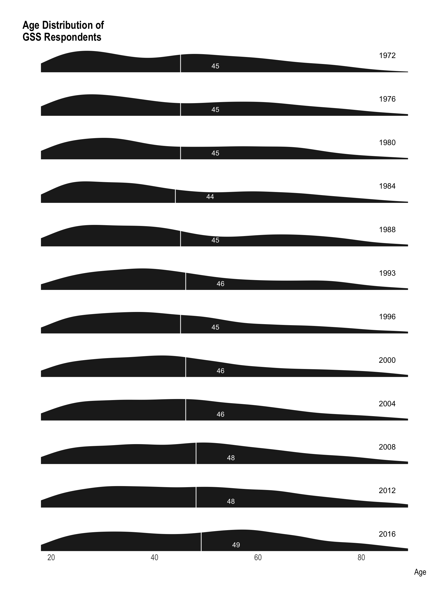
p <- ggplot(
data = gss_lon,
mapping =
aes(x = age,
y = factor(year,
levels = rev(unique(year)),
ordered = TRUE)))
p2b <- p +
geom_density_ridges(
alpha = 0.6, fill = "lightblue",
scale = 1.5) +
scale_x_continuous(
breaks = c(25, 50, 75)) +
scale_y_discrete(
expand = c(0.01, 0)) +
labs(x = "Age", y = NULL,
title =
"Age Distribution of\nGSS Respondents") +
theme_ridges() + # make labels aligned properly
theme(
title =
element_text(
size = 16, face = "bold"))
p2b
# install.packages("gridExtra")
grid.arrange(p2a, p2b, nrow = 1) # sub-figures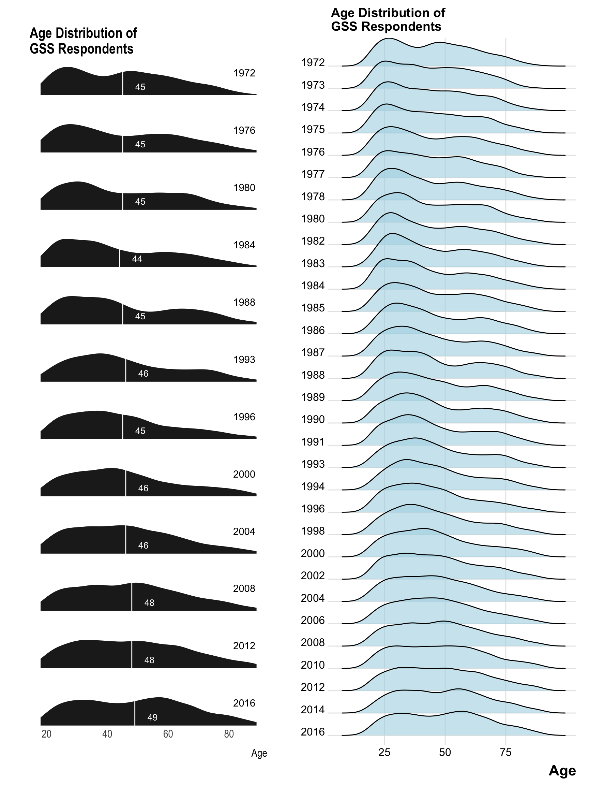
datatable(studebt)p_xlab <- "Amount Owed, in thousands of Dollars"
p_title <- "Outstanding Student Loans"
p_subtitle <- "44 million borrowers owe a total of $1.3 trillion"
p_caption <- "Source: FRB NY"
f_labs <- c(`Borrowers` = "Percent of all Borrowers",
`Balances` = "Percent of all Balances")
p <- ggplot(
data = studebt,
mapping =
aes(x = pct/100, y = Debt,
fill = type))
p1 <- p + geom_col()
p2 <- p1 +
scale_fill_brewer(
type = "qual", palette = "Dark2")
p3 <- p2 +
scale_x_continuous(
labels = scales::percent)
p4 <- p3 +
guides(fill = FALSE)
p5 <- p4 +
facet_grid(
.~ type,
labeller = as_labeller(f_labs))
p6 <- p5 +
labs(y = NULL, x = p_xlab,
caption = p_caption,
title = p_title,
subtitle = p_subtitle)
p7 <- p6 +
theme(strip.text.x =
element_text(face = "bold"))
p7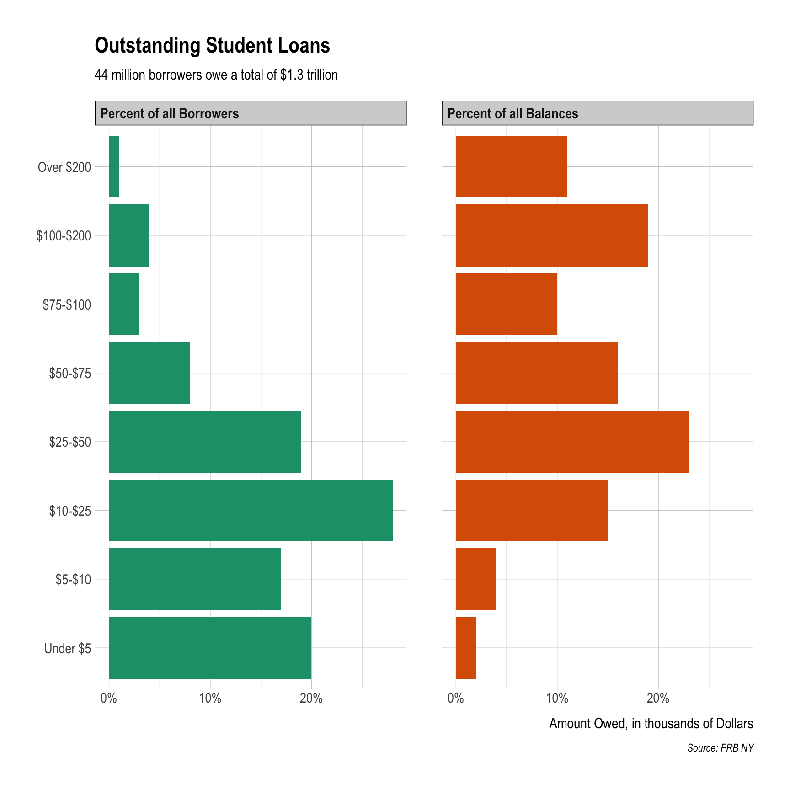
p <- ggplot(
studebt,
aes(x = pct/100, y = type,
fill = Debtrc))
p1 <- p +
geom_col(color = "gray80")
p2 <- p1 +
scale_y_discrete(
labels = as_labeller(f_labs))
p3 <- p2 +
scale_x_continuous(
labels = scales::percent)
p4 <- p3 +
scale_fill_viridis_d(
option = "B")
p4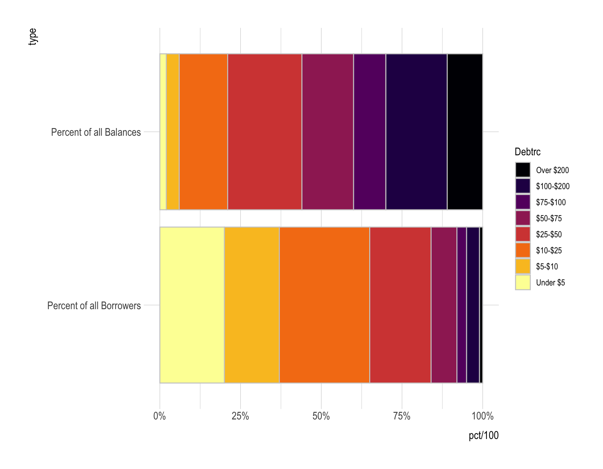
p5 <- p4 +
guides(
fill =
guide_legend(
reverse = TRUE,
title.position = "top",
label.position = "bottom",
keywidth = 3,
nrow = 1))
p6 <- p5 +
labs(x = NULL, y = NULL,
fill = "Amount Owed, in thousands of dollars",
caption = p_caption,
title = p_title,
subtitle = p_subtitle)
p7 <- p6 +
theme(legend.position = "top",
axis.text.y =
element_text(
face = "bold",
hjust = 1,
size = 12),
axis.ticks.length =
unit(0, "cm"),
panel.grid.major.y =
element_blank())
p7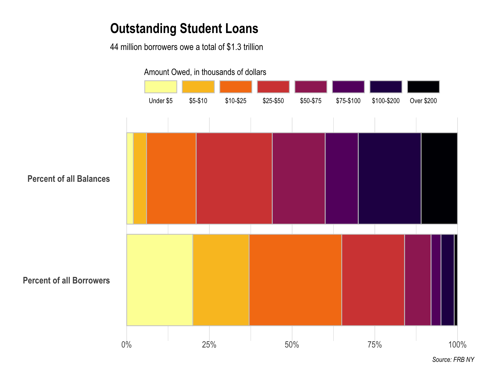